<!DOCTYPE html>
<html>
<head><meta name="generator" content="Hexo 3.8.0">
  <meta charset="utf-8">
  
  <title>计算机网络体系结构 | LIUXUEWEN&#39;S BLOG</title>
  <meta name="viewport" content="width=device-width, initial-scale=1, maximum-scale=1">
  
    <meta name="keywords" content="LIUXUEWEN,LIUXUEWEN's Blog">
  
  <meta name="description" content="一、为什么需要计算机网络体系结构  计算机网络是个复杂的系统，连接在网络上的两台计算机通信时需要考虑很多复杂因素，比如：  1）两台计算机间须有一条传送数据的通路；  2）告诉网络如何识别接收数据的计算机；  3）发起通信的计算机须保证要传送的数据能在这条通路上正确发送和接收；  4）对通信间出现的差错和意外事故，应有可靠完善的措施保证对方计算机最终能正确收到数据。   计算机网络体系结构标准的制">
<meta name="keywords" content="网络协议">
<meta property="og:type" content="article">
<meta property="og:title" content="计算机网络体系结构">
<meta property="og:url" content="http://liuxuewen-site.github.io/2018/08/30/netword-bs-system/index.html">
<meta property="og:site_name" content="LIUXUEWEN&#39;S BLOG">
<meta property="og:description" content="一、为什么需要计算机网络体系结构  计算机网络是个复杂的系统，连接在网络上的两台计算机通信时需要考虑很多复杂因素，比如：  1）两台计算机间须有一条传送数据的通路；  2）告诉网络如何识别接收数据的计算机；  3）发起通信的计算机须保证要传送的数据能在这条通路上正确发送和接收；  4）对通信间出现的差错和意外事故，应有可靠完善的措施保证对方计算机最终能正确收到数据。   计算机网络体系结构标准的制">
<meta property="og:locale" content="default">
<meta property="og:image" content="http://liuxuewen-site.github.io/2018/08/30/netword-bs-system/1.png">
<meta property="og:image" content="http://liuxuewen-site.github.io/2018/08/30/netword-bs-system/2.png">
<meta property="og:image" content="http://liuxuewen-site.github.io/2018/08/30/netword-bs-system/3.png">
<meta property="og:image" content="http://liuxuewen-site.github.io/2018/08/30/netword-bs-system/4.png">
<meta property="og:image" content="http://liuxuewen-site.github.io/2018/08/30/netword-bs-system/5.png">
<meta property="og:image" content="http://liuxuewen-site.github.io/2018/08/30/netword-bs-system/6.png">
<meta property="og:image" content="http://liuxuewen-site.github.io/2018/08/30/netword-bs-system/7.png">
<meta property="og:image" content="http://liuxuewen-site.github.io/2018/08/30/netword-bs-system/8.png">
<meta property="og:image" content="http://liuxuewen-site.github.io/2018/08/30/netword-bs-system/9.png">
<meta property="og:image" content="http://liuxuewen-site.github.io/2018/08/30/netword-bs-system/10.png">
<meta property="og:image" content="http://liuxuewen-site.github.io/2018/08/30/netword-bs-system/11.jpg">
<meta property="og:updated_time" content="2018-09-15T16:32:53.216Z">
<meta name="twitter:card" content="summary">
<meta name="twitter:title" content="计算机网络体系结构">
<meta name="twitter:description" content="一、为什么需要计算机网络体系结构  计算机网络是个复杂的系统，连接在网络上的两台计算机通信时需要考虑很多复杂因素，比如：  1）两台计算机间须有一条传送数据的通路；  2）告诉网络如何识别接收数据的计算机；  3）发起通信的计算机须保证要传送的数据能在这条通路上正确发送和接收；  4）对通信间出现的差错和意外事故，应有可靠完善的措施保证对方计算机最终能正确收到数据。   计算机网络体系结构标准的制">
<meta name="twitter:image" content="http://liuxuewen-site.github.io/2018/08/30/netword-bs-system/1.png">
  
  
    <link rel="icon" href="/favicon.ico">
  
  <link href="//cdn.bootcss.com/font-awesome/4.7.0/css/font-awesome.min.css" rel="stylesheet" type="text/css">
  <link rel="stylesheet" href="/css/style.css">
  <script src="/js/pace.min.js"></script>
  

  
  

</head>
</html>
<body>
  <div id="container">
      <header id="header">
    <div id="banner"></div>
    <div id="header-outer">
        <div id="header-menu" class="header-menu-pos animated">
            <div class="header-menu-container">
                <a href="/" class="left">
                    <span class="site-title">I AM LIUXUEWEN</span>
                </a>
                <nav id="header-menu-nav" class="right">
                    
                    <a href="/">
                        <i class="fa fa-home"></i>
                        <span>Home</span>
                    </a>
                    
                    <a href="/archives">
                        <i class="fa fa-archive"></i>
                        <span>Archives</span>
                    </a>
                    
                    <a href="/about">
                        <i class="fa fa-user"></i>
                        <span>About</span>
                    </a>
                    
                </nav>
                <a class="mobile-header-menu-button">
                    <i class="fa fa-bars"></i>
                </a>
            </div>
        </div>
        <div id="header-row">
            <div id="logo">
                <a href="/">
                    
                </a>
            </div>
            <div class="header-info">
                <div id="header-title">
                    
                    <h2>
                        I AM LIUXUEWEN
                    </h2>
                    
                </div>
                <div id="header-description">
                    
                    <h3>
                        一个 宅不住 的 IT程序员
                    </h3>
                    
                </div>
            </div>
            <nav class="header-nav">
                <div class="social">
                    
                        <a title="Github" target="_blank" href="//github.com/liuxuewen-site">
                            <i class="fa fa-github fa-2x"></i></a>
                    
                        <a title="Weibo" "="">
                            <i class="fa fa-weibo fa-2x"></i></a>
                    
                        <a title="Weixin" "="">
                            <i class="fa fa-weixin fa-2x"></i></a>
                    
                </div>
            </nav>
        </div>
    </div>
</header>
      <div class="outer">
        <section id="main" class="body-wrap"><article id="post-netword-bs-system" class="article article-type-post" itemscope="" itemprop="blogPost">
  <div class="article-inner">
    
      <header class="article-header">
        
  
    <h1 class="post-title" itemprop="name">
      计算机网络体系结构
    </h1>
    <div class="post-title-bar">
      <ul>
          
              <li>
                  <i class="fa fa-book"></i>
                  
                      <a href="/categories/网络协议/">网络协议</a>
                  
              </li>
          
        <li>
          <i class="fa fa-calendar"></i>  2018-08-30
        </li>
        <li>
          <i class="fa fa-eye"></i>
          <span id="busuanzi_value_page_pv"></span>
        </li>
      </ul>
    </div>
  

          
      </header>
    
    <div class="article-entry post-content" itemprop="articleBody">
      
            
            <h3 id="一、为什么需要计算机网络体系结构"><a href="#一、为什么需要计算机网络体系结构" class="headerlink" title="一、为什么需要计算机网络体系结构"></a>一、为什么需要计算机网络体系结构</h3><p>  计算机网络是个复杂的系统，连接在网络上的两台计算机通信时需要考虑很多复杂因素，比如：<br>  1）两台计算机间须有一条传送数据的通路；<br>  2）告诉网络如何识别接收数据的计算机；<br>  3）发起通信的计算机须保证要传送的数据能在这条通路上正确发送和接收；<br>  4）对通信间出现的差错和意外事故，应有可靠完善的措施保证对方计算机最终能正确收到数据。</p>
<p>  计算机网络体系结构标准的制定就是为了解决这些问题，让两台网络设备正常通信。它是用了什么思想做到呢？</p>
<h3 id="二、计算机网络体系结构的基本思想"><a href="#二、计算机网络体系结构的基本思想" class="headerlink" title="二、计算机网络体系结构的基本思想"></a>二、计算机网络体系结构的基本思想</h3><p>  分层思想，即将庞大复杂的问题转化为若干较小的、容易处理的、单一的局部问题，然后在不同层次上予以解决。在计算机网络体系结构中，分层思想的内涵是，每层在依赖自己下层所提供的服务的基础上，通过自身内部功能实现一种特定的服务。</p>
<p>  分层思想优点：<br>  1）耦合度低(独立性强)：<br>  上层只需通过下层所提供的接口来使用下层所实现的服务，而不需要关心下层的具体实现。</p>
<p>  2）适应性强：<br>  只要每层为上层提供的服务和接口不变，每层的实现细节可以任意改变。</p>
<p>  3）易于实现和维护：<br>  分层结构使得整体层次清晰，工作人员能专心的负责自己所负责的模块。</p>
<h3 id="三、计算机网络体系结构的概念、标准、模型"><a href="#三、计算机网络体系结构的概念、标准、模型" class="headerlink" title="三、计算机网络体系结构的概念、标准、模型"></a>三、计算机网络体系结构的概念、标准、模型</h3><p>  1）计算机网络体系结构的概念：</p>
<p>  在计算机网络中，层、层间接口及协议的集合被称为计算机网络体系结构。</p>
<p>  2）计算机网络体系结构的标准：</p>
<p>  国际标准是 OSI 七层模型，实际应用最广泛的是 TCP/IP 体系结构。（国际化标准组织ISO制定）<br>  换句话说，OSI 七层模型只是理论上的、官方制定的国际标准，而 TCP/IP 体系结构才是事实上的国际标准。</p>
<p>  需要指出的是，五层体系结构虽然综合了 OSI 和 TCP/IP 的优点，但其只是为了学术学习研究而提出的，没有具体的实际意义。</p>
<p>  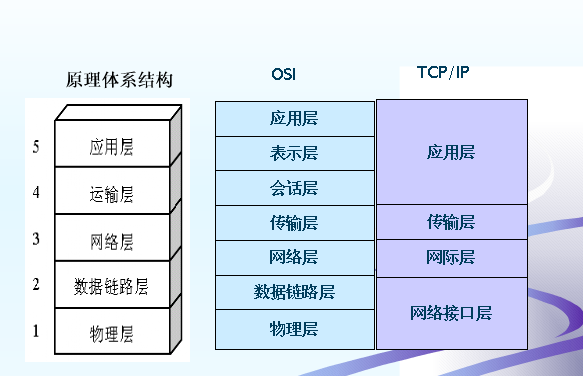</p>
<p>  3）计算机网络体系结构的分层模型：</p>
<p>  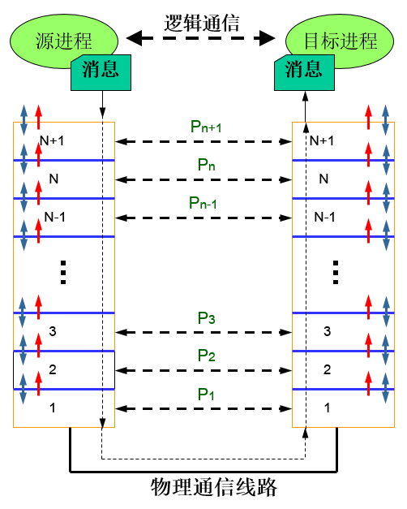</p>
<p>  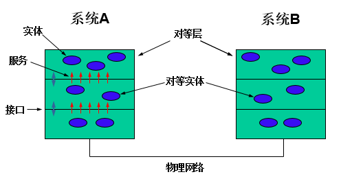</p>
<p>  a、相关概念：</p>
<p>  实体: 任何可以发送和接收信息的软硬件进程；<br>  对等层：两个不同系统的同一层次；<br>  对等实体：分别位于不同系统对等层的两个实体；<br>  接口：上层使用下层所提供的功能的方式；<br>  服务：某一层及其以下各层的所完成的功能，通过接口提供给相邻的上层；<br>  协议：通信双方在通信过程中必须遵循的规则。</p>
<p>  b、相关准则：</p>
<p>  同一网络中，任意两个端系统必须具有相同的层次；<br>  每层使用其下层提供的服务，并向其上层提供服务；<br>  通信只在对等层间进行，这里所指的通信是间接的、逻辑的、虚拟的，非对等层之间不能互相通信；<br>  实际的物理通信只在最底层完成；<br>  Pn代表第n层的协议，即第n层对等实体间通信时必须遵循的规则或约定。</p>
<p>  c、对等层通信的实质：</p>
<p>  在逻辑上，网络分层体系结构原理允许不同主机的对等实体进行通信，但禁止不同主机非对等实体间进行直接通信；在物理上，每一层必须依靠下层提供的服务来与另一台主机的对等层通信。这就是对等层通信的实质。</p>
<p>  d、通信协议：</p>
<p>  通信协议定义了网络实体间发送报文和接收报文的格式、顺序及当传送和接收消息时应采取的行动(规则)。这个定义指明了通信协议的三要素：语义（指对协议中各协议元素的含义的解释）、语法（指协议元素与数据的组合格式即报文格式）、时序（指在通信过程中，通信双方操作的执行顺序与规则）</p>
<p>  计算机间通信的本质就在于信息报文的交换，信息报文也就是协议数据单元（PDU）。实际上，语法规定了PDU的格式，语义赋予了PDU的特定内涵，时序是通信规则的体现。三者的关系是，语法是语义的载体，时序是对语义的有序组织，正是基于这种关系，计算机在通信时才得以保持高度默契。</p>
<p>  e、协议数据单元（PDU）：</p>
<p>  计算机网络体系结构中，对等层之间交换的信息报文统称为 协议数据单元（Protocol Data Unit，PDU）。PDU由 协议控制信息（协议头，含有完成数据传输所需的控制信息，比如地址、序号、长度、分段标志、差错控制信息等） 和 数据（SDU） 组成。</p>
<p>  PDU的封装过程是，下层把上层的PDU作为本层的数据加以封装，与本层的协议头部（和尾部）形成本层的PDU。因此，数据在源站自上而下递交的过程实际上就是不断封装的过程，而到达目的地后自下而上递交的过程就是不断拆封的过程。需要注意的是，每一层只处理本层的协议头部！</p>
<h3 id="四、OSI-七层体系结构"><a href="#四、OSI-七层体系结构" class="headerlink" title="四、OSI 七层体系结构"></a>四、OSI 七层体系结构</h3><p>  1）七层结构分别是：</p>
<p>  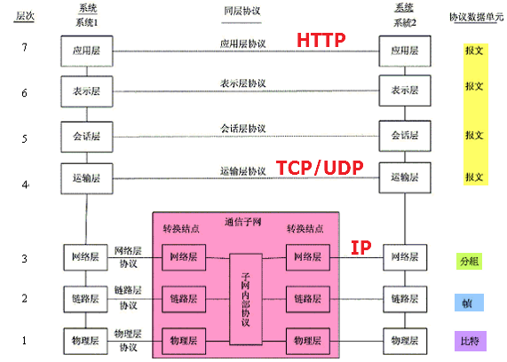</p>
<p>  2）各层次功能： </p>
<p>  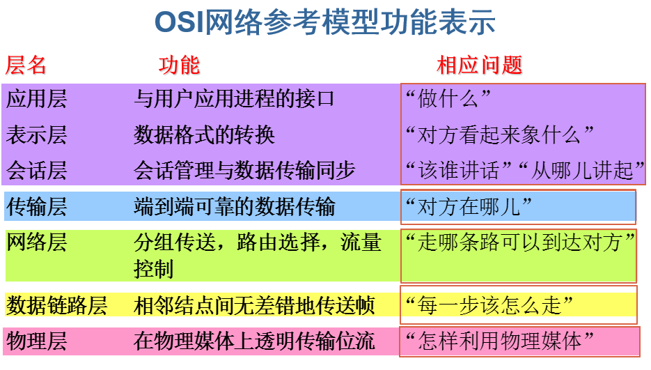</p>
<p>  3）PDU数据封装示意图：</p>
<p>  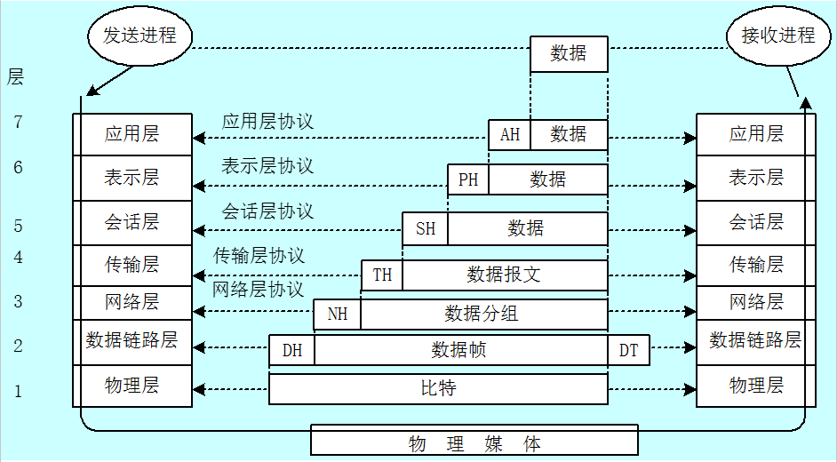</p>
<p>  4）物理层：</p>
<p>  a、功能</p>
<p>  a-1、在物理介质上正确透明地传送比特流（就是由1、0转化为电流强弱来进行传输，到达目的地后再转化为1、0，也即数模转换与模数转换）；a-2、实现相邻计算机节点之间比特流的透明传送，尽可能屏蔽掉具体传输介质和物理设备的差异，使数据链路层不必关心网络的具体传输介质。</p>
<p>  b、协议</p>
<p>  规定了物理接口的各种特性和物理设备的标准，如网线的接口类型、光纤的接口类型、各种传输介质的传输速率等。 </p>
<p>  5）数据链路层：</p>
<p>  a、功能</p>
<p>  a-1、接收来自物理层的位流形式的数据，并封装成帧传送到上一层；同样也将来自上层的数据帧，拆装为位流形式的数据转发到物理层；a-2、此外，通过各种控制协议，提供物理地址寻址、数据成帧、流量控制（指抑止发送方的传输速率，使接收方来得及接收）、差错控制（指处理接收端发回的确认帧的信息，以便提供可靠的数据传输）等功能，实现数据在不可靠的物理线路上的可靠传递。</p>
<p>  b、协议</p>
<p>  负责提供物理地址寻址、数据成帧、流量控制、差错控制等功能，确保数据的可靠传输；</p>
<p>  6）网络层：</p>
<p>  a、功能</p>
<p>  a-1、将网络地址翻译成对应的物理地址；a-2、并通过路由选择算法为分组通过通信子网选择最适当的路径。</p>
<p>  b、协议</p>
<p>  提供无连接数据报服务的IP协议</p>
<p>  c、产品</p>
<p>  路由器</p>
<p>  d、路由选择</p>
<p>  网络层最重要的一个功能。网路层会依据速度、距离(步跳数)、价格和拥塞程度等因素在多条通信路径中找一条最佳路径。所谓路由，一般包括路由表和路由算法两个方面。事实上，每个路由器都必须建立和维护其路由表，一种是静态维护，也就是人工设置，只适用于小型网络；另一种是动态维护，是在运行过程中根据网络情况自动地动态维护路由表。</p>
<p>  7）传输层：</p>
<p>  a、功能</p>
<p>  OSI下3层(物理层，数据链路层和网络层)的主要任务是数据通信，上3层（会话层，表示层和应用层）的任务是数据处理，传输层恰好是中间层第4层，是通信子网和资源子网的接口和桥梁，起到承上启下的作用。</p>
<p>  a-1、其主要任务是，向用户提供可靠的端到端的差错和流量控制，保证报文的正确传输，并通过透明数据传输使上层服务用户不必关系通信子网的实现细节。</p>
<p>  b、协议</p>
<p>  TCP/IP中的TCP、UDP协议，Novell网络中的SPX协议和微软的NetBIOS/NetBEUI协议。</p>
<p>  c、传输层与数据链路层都有流量差错控制等功能，什么区别呢？</p>
<p>  首先，数据链路层是在节点（跳与跳）之间保证的，而传输层应用程序端到端之间保证。其次，数据链路层处理的是帧，传输层处理的是报文。</p>
<p>  8）会话层：</p>
<p>  a、功能</p>
<p>  a-1、负责建立、维持、终止通信链接，保持会话过程通信链接的畅通，同步两个节点之间的对话，决定通信是否被中断以及通信中断时决定从何处重新发送。</p>
<p>  9）表示层：</p>
<p>  a、功能</p>
<p>  a-1、解释来自应用层的命令和数据，确保一个系统的应用层所发送的信息可以被另一个系统的应用层读取，也即处理用户信息的表示问题，如编码、数据格式转换和加密解密等。</p>
<p>  10）应用层：</p>
<p>  a、功能</p>
<p>  a-1、是用户应用程序与网络间的接口，使用户的应用程序能够与网络进行交互式联系，同时协调各个应用程序间的工作。</p>
<p>  b、协议</p>
<p>  OSI: VTP、MHS、FTAM、DS、…<br>  TCP/IP: Telnet、SMTP、FTP、DNS、HTTP、…</p>
<h3 id="五、TCP-IP-四层体系结构"><a href="#五、TCP-IP-四层体系结构" class="headerlink" title="五、TCP/IP 四层体系结构"></a>五、TCP/IP 四层体系结构</h3><p>  1）四层结构与PDU数据单元：</p>
<p>  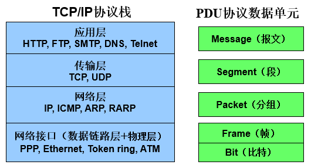</p>
<p>  2）应用层：</p>
<p>  应用层决定了向用户提供应用服务时的通信活动。TCP/IP协议族内预存了各类通用的应用服务，比如 FTP（文件传输协议）和 DNS（域名系统）服务，HTTP 协议也处于该层。</p>
<p>  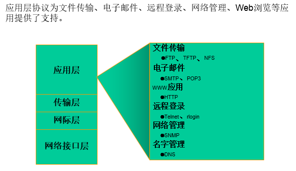</p>
<p>  3）传输层：</p>
<p>  传输层向应用层提供处于网络连接中的两台计算机之间的数据传输。本层有两个性质不同的协议：TCP（传输控制协议 – 连接 可靠）和 UDP（用户数据报协议 – 无连接 不可靠）。传输层与应用层之间的关系如下： </p>
<p>  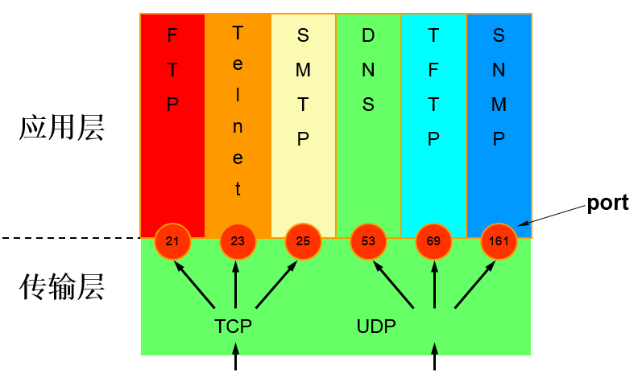</p>
<p>  4）网络层：</p>
<p>  网络层用来处理在网络上流动的数据包（网络传输的最小数据单位），规定了通过怎样的路径（传输路线）到达对方计算机，并把数据包传送给对方。与对方计算机之间通过多台计算机或网络设备进行传输时，网络层所起的作用就是在众多的选项内选择一条传输路线，把数据报通过最佳路径送到目的端。网际层的核心协议IP，提供了无连接的数据报传输服务(不保证送达，不保序）。网络层与传输层之间的关系如下： </p>
<p>  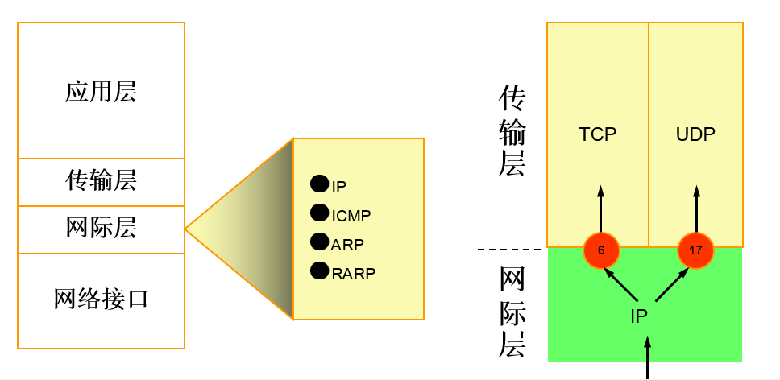</p>
<p>  5）网络接口层：</p>
<p>  网络接口层用来处理连接网络的硬件部分，包括硬件的设备驱动、NIC（Network Interface Card，网卡）及光纤等物理可见部分，还包括连接器等一切传输媒介。也就是说，硬件上的范畴均在链路层的作用范围之内。</p>
<h3 id="五、最后，来个总图"><a href="#五、最后，来个总图" class="headerlink" title="五、最后，来个总图"></a>五、最后，来个总图</h3><p>  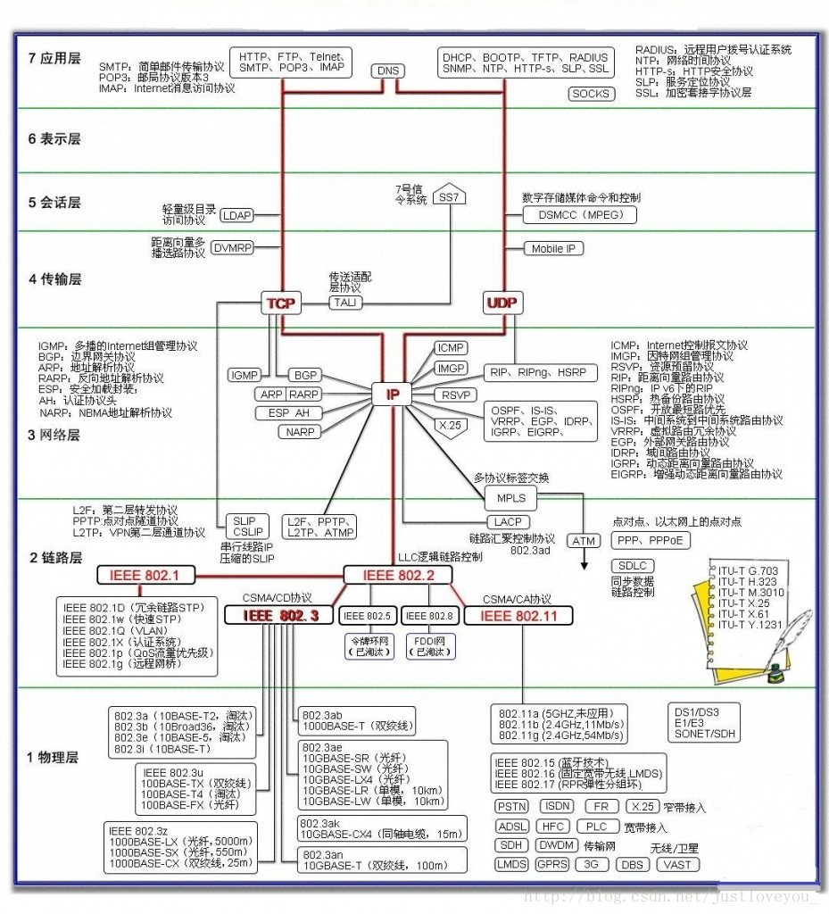</p>
<p>标注：</p>
<ul>
<li>参考资料1：<a href="https://blog.csdn.net/justloveyou_/article/details/69612153" target="_blank" rel="noopener">https://blog.csdn.net/justloveyou_/article/details/69612153</a></li>
</ul>

            <div class="post-copyright">
    <div class="content">
        <p>最后更新： 2018年09月16日 00:32</p>
        <p>原始链接： <a class="post-url" href="/2018/08/30/netword-bs-system/" title="计算机网络体系结构">http://liuxuewen-site.github.io/2018/08/30/netword-bs-system/</a></p>
        <footer>
            <a href="http://liuxuewen-site.github.io">
                
                liuxuewen
            </a>
        </footer>
    </div>
</div>

      
        
            
<div class="page-reward">
    <a id="rewardBtn" href="javascript:;">赏</a>
</div>

<div id="reward" class="post-modal reward-lay">
    <a class="close" href="javascript:;" id="reward-close">×</a>
    <span class="reward-title">
        <i class="icon icon-quote-left"></i>
        请我吃糖~
        <i class="icon icon-quote-right"></i>
    </span>
    <div class="reward-content">
        
        <div class="reward-code">
            
        </div>
        <div class="reward-select">
            
            <label class="reward-select-item checked" data-id="wechat" data-wechat="/images/wechat_code.jpg">
                
            </label>
            
            
            <label class="reward-select-item" data-id="alipay" data-alipay="/images/alipay_code.jpg">
                
            </label>
            
        </div>
    </div>
</div>


        
    </div>
    <footer class="article-footer">
        
        
<div class="post-share">
    <a href="javascript:;" id="share-sub" class="post-share-fab">
        <i class="fa fa-share-alt"></i>
    </a>
    <div class="post-share-list" id="share-list">
        <ul class="share-icons">
          <li>
            <a class="weibo share-sns" target="_blank" href="http://service.weibo.com/share/share.php?url=http://liuxuewen-site.github.io/2018/08/30/netword-bs-system/&title=《计算机网络体系结构》 — LIUXUEWEN'S BLOG&pic=http://liuxuewen-site.github.ioimages/logo.png" data-title="微博">
              <i class="fa fa-weibo"></i>
            </a>
          </li>
          <li>
            <a class="weixin share-sns" id="wxFab" href="javascript:;" data-title="微信">
              <i class="fa fa-weixin"></i>
            </a>
          </li>
          <li>
            <a class="qq share-sns" target="_blank" href="http://connect.qq.com/widget/shareqq/index.html?url=http://liuxuewen-site.github.io/2018/08/30/netword-bs-system/&title=《计算机网络体系结构》 — LIUXUEWEN'S BLOG&source=" data-title="QQ">
              <i class="fa fa-qq"></i>
            </a>
          </li>
          <li>
            <a class="facebook share-sns" target="_blank" href="https://www.facebook.com/sharer/sharer.php?u=http://liuxuewen-site.github.io/2018/08/30/netword-bs-system/" data-title="Facebook">
              <i class="fa fa-facebook"></i>
            </a>
          </li>
          <li>
            <a class="twitter share-sns" target="_blank" href="https://twitter.com/intent/tweet?text=《计算机网络体系结构》 — LIUXUEWEN'S BLOG&url=http://liuxuewen-site.github.io/2018/08/30/netword-bs-system/&via=http://liuxuewen-site.github.io" data-title="Twitter">
              <i class="fa fa-twitter"></i>
            </a>
          </li>
          <li>
            <a class="google share-sns" target="_blank" href="https://plus.google.com/share?url=http://liuxuewen-site.github.io/2018/08/30/netword-bs-system/" data-title="Google+">
              <i class="fa fa-google-plus"></i>
            </a>
          </li>
        </ul>
     </div>
</div>
<div class="post-modal wx-share" id="wxShare">
    <a class="close" href="javascript:;" id="wxShare-close">×</a>
    <p>扫一扫，分享到微信</p>
    
</div>

<div class="mask"></div>

        
        <ul class="article-footer-menu">
            
            
  <li class="article-footer-tags">
    <i class="fa fa-tags"></i>
      
    <a href="/tags/网络协议/" class="color5">网络协议</a>
      
  </li>

        </ul>
        
    </footer>
  </div>
</article>


    <aside class="post-toc-pos post-toc-top" id="post-toc">
        <nav class="post-toc-wrap">
            <ol class="post-toc"><li class="post-toc-item post-toc-level-3"><a class="post-toc-link" href="#一、为什么需要计算机网络体系结构"><span class="post-toc-text">一、为什么需要计算机网络体系结构</span></a></li><li class="post-toc-item post-toc-level-3"><a class="post-toc-link" href="#二、计算机网络体系结构的基本思想"><span class="post-toc-text">二、计算机网络体系结构的基本思想</span></a></li><li class="post-toc-item post-toc-level-3"><a class="post-toc-link" href="#三、计算机网络体系结构的概念、标准、模型"><span class="post-toc-text">三、计算机网络体系结构的概念、标准、模型</span></a></li><li class="post-toc-item post-toc-level-3"><a class="post-toc-link" href="#四、OSI-七层体系结构"><span class="post-toc-text">四、OSI 七层体系结构</span></a></li><li class="post-toc-item post-toc-level-3"><a class="post-toc-link" href="#五、TCP-IP-四层体系结构"><span class="post-toc-text">五、TCP/IP 四层体系结构</span></a></li><li class="post-toc-item post-toc-level-3"><a class="post-toc-link" href="#五、最后，来个总图"><span class="post-toc-text">五、最后，来个总图</span></a></li></ol>
        </nav>
    </aside>
    

<nav id="article-nav">
  
    <a href="/2018/09/14/JS-bs-data/" id="article-nav-newer" class="article-nav-link-wrap">

      <span class="article-nav-title">
        <i class="fa fa-hand-o-left" aria-hidden="true"></i>
        
          JS数据类型
        
      </span>
    </a>
  
  
    <a href="/2018/07/08/React-gw-23/" id="article-nav-older" class="article-nav-link-wrap">
      <span class="article-nav-title">React官网之23-片段(Fragments)</span>
      <i class="fa fa-hand-o-right" aria-hidden="true"></i>
    </a>
  
</nav>


    
</section>
        
      </div>
      <footer id="footer">
  <div class="outer">
    <div id="footer-info" class="inner">
      
<p>
    <span id="busuanzi_container_site_uv" style="display:none">
        总访客数：<span id="busuanzi_value_site_uv"></span>
    </span>
    <span id="busuanzi_container_site_pv" style="display:none">
        总访问量：<span id="busuanzi_value_site_pv"></span>
    </span>
</p>


      <!-- <p>
        Powered by  <a href="http://hexo.io/" target="_blank">Hexo</a>
        Theme <a href="//github.com/wongminho/hexo-theme-miho" target="_blank">MiHo</a>
      &copy; 2019 liuxuewen<br>
      </p> -->
      <p>
        1320325272@qq.com 
        liuxuewen
      </p>
    </div>
  </div>
</footer>
    <script async src="//busuanzi.ibruce.info/busuanzi/2.3/busuanzi.pure.mini.js"></script>
<script src="//cdn.bootcss.com/jquery/3.2.1/jquery.min.js"></script>
<script>
  var mihoConfig = {
      root: "http://liuxuewen-site.github.io",
      animate: true,
      isHome: false,
      share: true,
      reward: 1
  }
</script>
<div class="sidebar">
    <div id="sidebar-search" title="Search">
        <i class="fa fa-search"></i>
    </div>
    <div id="sidebar-category" title="Categories">
        <i class="fa fa-book"></i>
    </div>
    <div id="sidebar-tag" title="Tags">
        <i class="fa fa-tags"></i>
    </div>
    <div id="sidebar-top">
        <span class="sidebar-top-icon"><i class="fa fa-angle-up"></i></span>
    </div>
</div>
<div class="sidebar-menu-box" id="sidebar-menu-box">
    <div class="sidebar-menu-box-container">
        <div id="sidebar-menu-box-categories">
            <a class="category-link" href="/categories/hexo/">hexo</a><a class="category-link" href="/categories/前端/">前端</a><a class="category-link" href="/categories/后台/">后台</a><a class="category-link" href="/categories/数据结构/">数据结构</a><a class="category-link" href="/categories/网络协议/">网络协议</a><a class="category-link" href="/categories/项目/">项目</a>
        </div>
        <div id="sidebar-menu-box-tags">
            <a href="/tags/hexo/" style="font-size: 12.86px;">hexo</a> <a href="/tags/前端-CSS/" style="font-size: 14.29px;">前端-CSS</a> <a href="/tags/前端-ES6/" style="font-size: 11.43px;">前端-ES6</a> <a href="/tags/前端-HTML5/" style="font-size: 10px;">前端-HTML5</a> <a href="/tags/前端-JS/" style="font-size: 18.57px;">前端-JS</a> <a href="/tags/前端-react/" style="font-size: 20px;">前端-react</a> <a href="/tags/前端-安全性/" style="font-size: 10px;">前端-安全性</a> <a href="/tags/前端-性能优化/" style="font-size: 10px;">前端-性能优化</a> <a href="/tags/前端-服务器/" style="font-size: 11.43px;">前端-服务器</a> <a href="/tags/前端-移动端适配/" style="font-size: 11.43px;">前端-移动端适配</a> <a href="/tags/前端-考题/" style="font-size: 17.14px;">前端-考题</a> <a href="/tags/后台/" style="font-size: 10px;">后台</a> <a href="/tags/数据结构/" style="font-size: 10px;">数据结构</a> <a href="/tags/网络协议/" style="font-size: 15.71px;">网络协议</a> <a href="/tags/项目/" style="font-size: 10px;">项目</a>
        </div>
    </div>
    <a href="javascript:;" class="sidebar-menu-box-close">&times;</a>
</div>
<div class="mobile-header-menu-nav" id="mobile-header-menu-nav">
    <div class="mobile-header-menu-container">
        <span class="title">Menus</span>
        <ul class="mobile-header-menu-navbar">
            
            <li>
                <a href="/">
                    <i class="fa fa-home"></i><span>Home</span>
                </a>
            </li>
            
            <li>
                <a href="/archives">
                    <i class="fa fa-archive"></i><span>Archives</span>
                </a>
            </li>
            
            <li>
                <a href="/about">
                    <i class="fa fa-user"></i><span>About</span>
                </a>
            </li>
            
        </ul>
    </div>
    <div class="mobile-header-tag-container">
        <span class="title">Tags</span>
        <div id="mobile-header-container-tags">
            <a href="/tags/hexo/" style="font-size: 12.86px;">hexo</a> <a href="/tags/前端-CSS/" style="font-size: 14.29px;">前端-CSS</a> <a href="/tags/前端-ES6/" style="font-size: 11.43px;">前端-ES6</a> <a href="/tags/前端-HTML5/" style="font-size: 10px;">前端-HTML5</a> <a href="/tags/前端-JS/" style="font-size: 18.57px;">前端-JS</a> <a href="/tags/前端-react/" style="font-size: 20px;">前端-react</a> <a href="/tags/前端-安全性/" style="font-size: 10px;">前端-安全性</a> <a href="/tags/前端-性能优化/" style="font-size: 10px;">前端-性能优化</a> <a href="/tags/前端-服务器/" style="font-size: 11.43px;">前端-服务器</a> <a href="/tags/前端-移动端适配/" style="font-size: 11.43px;">前端-移动端适配</a> <a href="/tags/前端-考题/" style="font-size: 17.14px;">前端-考题</a> <a href="/tags/后台/" style="font-size: 10px;">后台</a> <a href="/tags/数据结构/" style="font-size: 10px;">数据结构</a> <a href="/tags/网络协议/" style="font-size: 15.71px;">网络协议</a> <a href="/tags/项目/" style="font-size: 10px;">项目</a>
        </div>
    </div>
</div>
<div class="search-wrap">
    <span class="search-close">&times;</span>
        <a href="javascript:;" class="header-icon waves-effect waves-circle waves-light" id="back">
            <i class="icon icon-lg icon-chevron-left"></i>
        </a>
        <input class="search-field" placeholder="Search..." id="keywords">
        <a id="search-submit" href="javascript:;">
            <i class="fa fa-search"></i>
        </a>
    <div class="search-container" id="search-container">
        <ul class="search-result" id="search-result">
        </ul>
    </div>
</div>

<div id="search-tpl">
    <li class="search-result-item">
        <a href="{url}" class="search-item-li">
            <span class="search-item-li-title" title="{title}">{title}</span>
        </a>
    </li>
</div>
<script src="/js/search.js"></script>
<script src="/js/main.js"></script>


  <script src="//cdn.bootcss.com/particles.js/2.0.0/particles.min.js"></script>
  <div id="particles"></div>
  <script src="/js/particles.js"></script>


  <link rel="stylesheet" href="//cdn.bootcss.com/animate.css/3.5.0/animate.min.css">
  <script src="//cdn.bootcss.com/scrollReveal.js/3.0.5/scrollreveal.js"></script>
  <script src="/js/animate.js"></script>


  <script src="/js/pop-img.js"></script>
  <script>
     $(".article-entry p img").popImg();
  </script>

  </div>
</body>
</html>